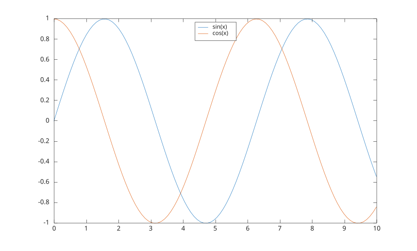

legend()
legend(label1, ..., labelN)
legend(labels)
legend(plotHandles, labels)
legend('off')
legend('hide')
legend('show')
legend('toggle')
legend('boxon')
legend('boxoff')
legend(ax, ...)
legend(ax, plotHandles, labels)
legend(..., 'Location', lcn)
legend(..., propertyName, propertyValue)
L = legend(...)
[L, icons, plots, text] = legend(...)
| Paramètre | Description |
|---|---|
| label1, ..., labelN | definit les etiquettes de la legende. |
| labels | cellule de vecteurs de caracteres ou tableau de chaines. |
| plotHandles | objets graphiques a inclure dans la legende. |
| 'off' | supprime la legende. |
| 'toggle' | active ou desactive la visibilite de la legende. |
| 'hide' | masque la legende. |
| 'show' | affiche la legende. |
| 'boxon' | affiche l'encadre autour de la legende. |
| 'boxoff' | masque l'encadre autour de la legende. |
| ax | axes ou axes polaires cible. |
| lcn | emplacement de la legende. La valeur par defaut est 'northeast'. |
| propertyName | chaine scalaire ou vecteur ligne de caracteres. |
| propertyValue | une valeur. |
| Paramètre | Description |
|---|---|
| L | un objet graphique de type legend. |
| icons | vecteur d'objets graphiques reserve aux icones de legende. |
| plots | objets graphiques representes par la legende. |
| text | vecteur d'objets graphiques reserve aux textes de legende. |
legend cree ou met a jour une legende attachee aux axes cibles.
Si les etiquettes sont omises, elles sont prises depuis la propriete DisplayName des objets traces. Quand AutoUpdate vaut on, les nouveaux objets traces sont ajoutes automatiquement.
L'objet renvoye a le type legend et prend en charge les proprietes AutoUpdate, Box, BackgroundAlpha, Color, EdgeColor, FontName, FontSize, FontAngle, FontWeight, Interpreter, ItemHitFcn, LineWidth, Location, NumColumns, Orientation, IconColumnWidth, Direction, Position, String, TextColor, Units, Title, ainsi que les proprietes communes des objets graphiques.
Emplacement de la legende sur le graphique :
'northeast' ou 'NE' : en haut a droite (par defaut).
'north' ou 'N' : en haut au centre.
'south' ou 'S' : en bas au centre.
'east' ou 'E' : au milieu a droite.
'west' ou 'W' : au milieu a gauche.
'northwest' ou 'NW' : en haut a gauche.
'southeast' ou 'SE' : en bas a droite.
'southwest' ou 'SW' : en bas a gauche.
Les emplacements exterieurs sont aussi pris en charge : 'northoutside', 'southoutside', 'eastoutside' et 'westoutside'.
Voir proprietes de legend pour la liste complete des proprietes.
f = figure();
x = linspace(0, 10);
y1 = sin(x);
y2 = cos(x);
ax = gca();
plot(ax, x, y1, 'DisplayName', 'sin(x)');
hold(ax, 'on');
plot(ax, x, y2, 'DisplayName', 'cos(x)');
legend(ax, 'Location', 'N')
f = figure();
x = 1:5;
plot(x, x);
hold on
plot(x, x .^ 2);
lgd = legend({'linear'; 'quadratic'}, 'NumColumns', 2);
title(lgd, 'Curves')| Version | Description |
|---|---|
| 1.0.0 | version initiale |